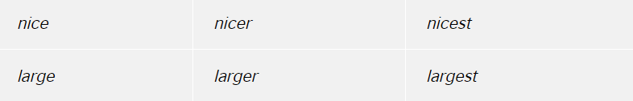

adjective (noun): a part-of-speech that modifies or describes a noun or a pronoun
An adjective is one of the nine parts of speech.
An adjective is a word that tells us more about a noun. It "describes" or "modifies"
a noun (The big dog was hungry). In these examples, the adjective is in bold and the noun
that it modifies is in italics.
An adjective often comes BEFORE a noun:
And sometimes an adjective comes AFTER a verb:
But adjectives can also modify pronouns (She is beautiful). Look at these examples:
Note that we can often use two or more adjectives together (a beautiful young French lady / it is black and white).
Some adjectives have particular endings, for example:
However, many adjectives have no obvious form.
We use comparative adjectives to show change or make comparisons:
We use than when we want to compare one thing with another:
We use than when we want to compare one thing with another:When we want to describe how something or someone changes we can use two comparatives with and:
We often use the with comparative adjectives to show that one thing depends on another:
We often use the with comparative adjectives to show that one thing depends on another:We use the with superlative adjectives:
We usually add –er and –est to one-syllable words to make comparatives and superlatives:
If an adjective ends in –e, we add –r or –st:
If an adjective ends in a vowel and a consonant, we double the consonant:
If an adjective ends in a consonant and –y, we change –y to –i and add –er or –est:
We use more and most to make comparatives and superlatives for most two syllable adjectives and for all adjectives with three or more syllables:
The adjectives good, bad and far have irregular comparatives and superlatives: